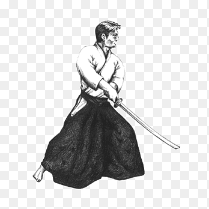

Iaido

About
Iaidō (居合道), abbreviated iai (居合), is a Japanese martial art that emphasizes being aware and capable of quickly drawing the sword and responding to sudden attacks. Iaido consists of four main components: the smooth, controlled movements of drawing the sword from its scabbard (or saya), striking or cutting an opponent, shaking blood from the blade, and replacing the sword in the scabbard. While beginning practitioners of iaido may start learning with a wooden sword (bokken) depending on the teaching style of a particular instructor, most of the practitioners use a blunt-edged sword called an iaitō or mogitō. Few, more experienced, iaido practitioners use a sharp-edged sword (shinken). Practitioners of iaido are called iaidoka.More
Iaido encompasses hundreds of styles of swordsmanship, all of which subscribe to non-combative aims and purposes. Iaido is an intrinsic form of Japanese modern budo. Iaido is a reflection of the morals of the classical warrior and to build a spiritually harmonious person possessed of high intellect, sensitivity, and resolute will. Iaido is for the most part performed solo as an issue of kata, executing changed strategies against single or various fanciful rivals. Every kata starts and finishes with the sword sheathed. Regardless of the sword method, creative ability and concentration are required to maintain the feeling of a genuine battle and to keep the kata new. Iaidoka are often expected to practice kendo to maintain the combative spirit. It is normal for high-ranking kendoka to hold high rank in iaido as well, and vice versa. To perform the kata appropriately, iaidoka likewise learn carriage and development, grip and swing.At times iaidoka will practice complementary kata from kendo or kenjutsu. Unlike kendo, iaido practice never involves sparring.